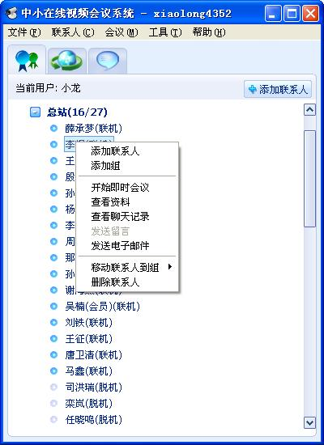
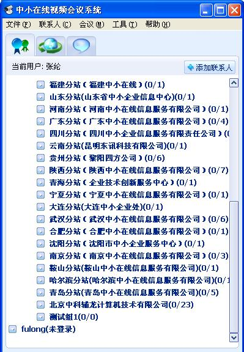
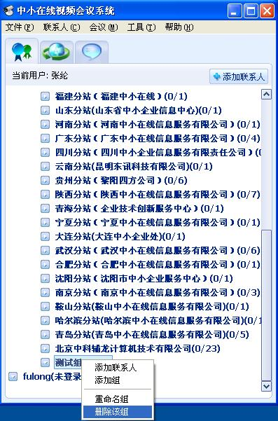
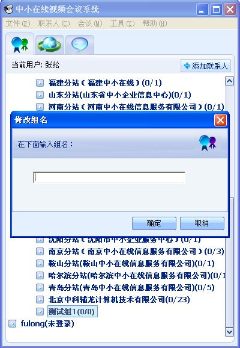

选中要删除的联系人，在“联系人”菜单中选择“管理联系人”->“删除联系人”选项，或在要删除的联系人上点右键，选择“删除联系人”选项（如图1），从双方的联系人列表中删除对方。

图1 删除联系人
 查看联系人资料
查看联系人资料
在上图中点击“查看资料”选项，可以查看联系人的基本信息，如下图所示：

图2 查看联系人信息
 添加组
添加组
点击“联系人”菜单，选择“管理组”->“创建组”，或在图1的弹出菜单中选择“添加组”，在弹出的框中输入组的名称，然后点击“确定”按钮。

图3 输入组名
输入的组名必须与已有的组名不同，添加成功后如下图所示：

图4 添加组
 删除组
删除组
点击“联系人”菜单，选择“管理组”->“删除组”，或在要删除的组上点右键，在弹出菜单中选择“删除组”，删除选中的组。删除的组必须是空的。

图5 删除组
 修改组名
修改组名
点击“联系人”菜单，选择“管理组”->“重命名组”，或在要重命名的组上点右键，在弹出菜单中选择“重命名组”，在弹出的框中输入新的组名，点确定修改选中的组的名称。

图6 修改组名
 将联系人加到组
将联系人加到组
选中联系人将联系人拖动到组中，或在联系人上点右键，选择“移动联系人到组”，将联系人加到组中。组名后面的数字表示当前组中的上线人数/组中所有人数。

图7 添加联系人到组